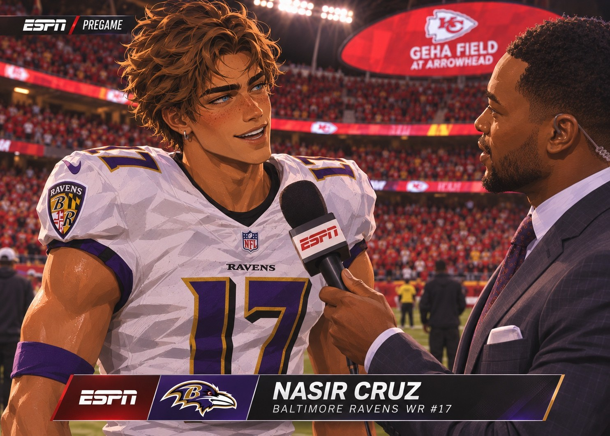
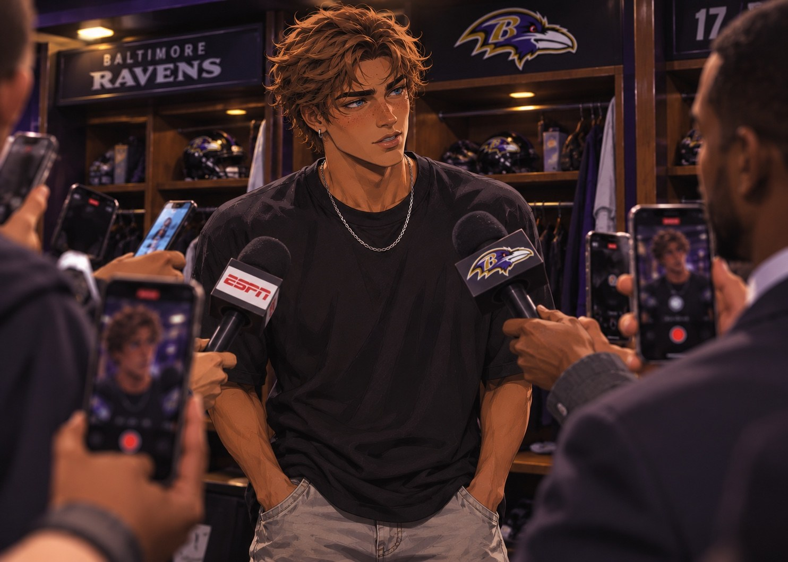
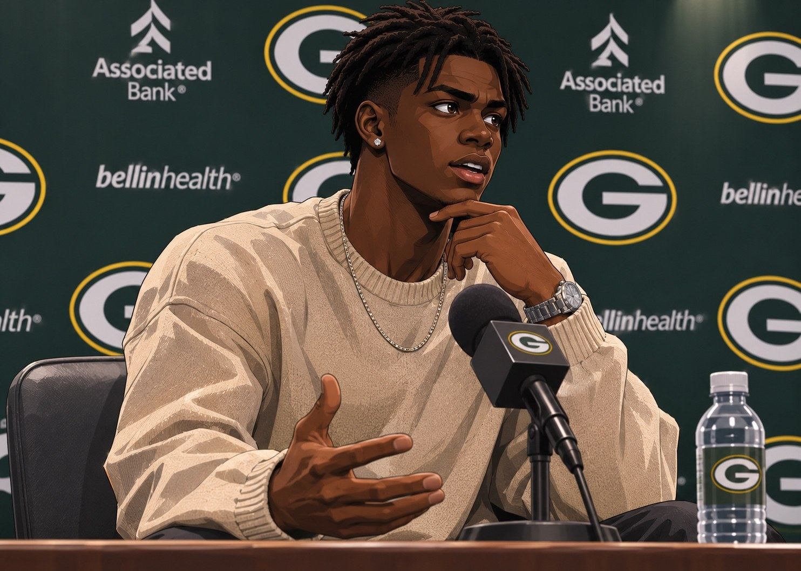
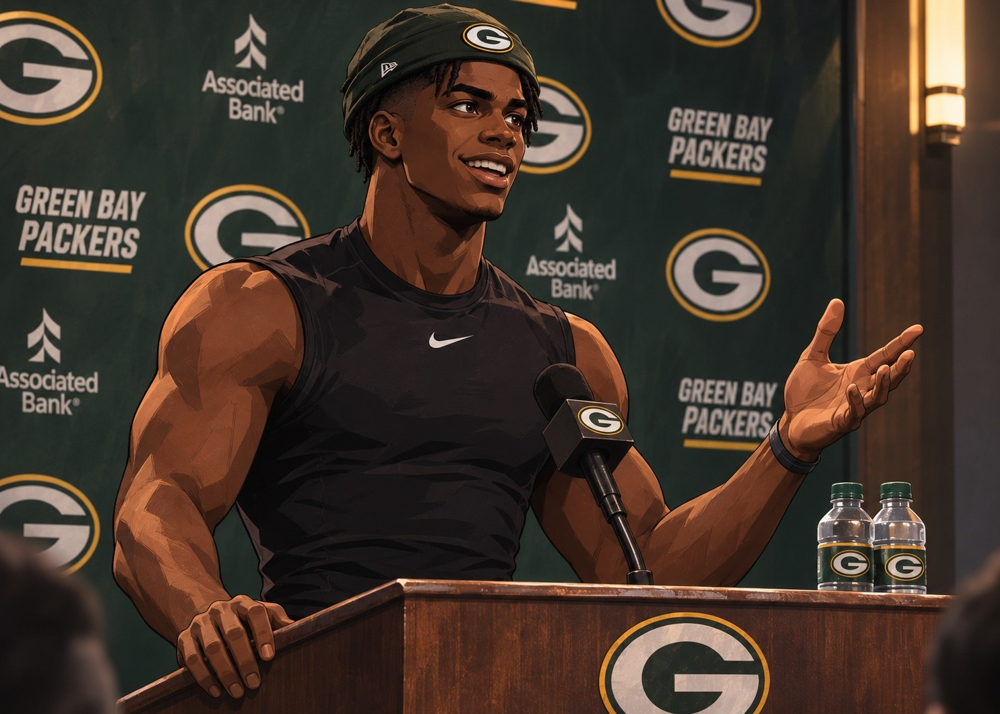
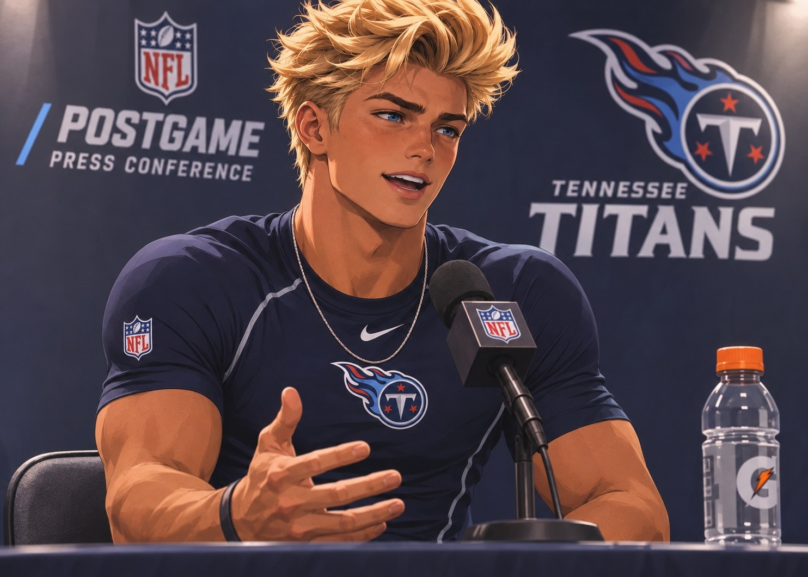

GAME FILM / 00:25
THE TAKEAWAY | FIRST NFL PICK
Knox turns a Texans throw into his first NFL interception. Houston still wins, but the rookie’s play is the defense’s clearest individual response.
A rookie quarterback who needed rescuing finds his voice. A cornerback stands tall while everything around him collapses. And the receiver who rewrote history discovers just how quickly the league can change the conversation.
A week ago, three rookies introduced themselves. Now the league has tape, opponents have a plan, and the expectations are changing.
Good morning. Week Two is here, and suddenly the conversation is completely different from last Sunday. Baltimore goes to Arrowhead after putting forty four on Cleveland. Green Bay is undefeated, but nobody seems remotely comfortable with its quarterback situation. And Tennessee gets a home game against Houston after a fourth quarter comeback in Atlanta.
I am starting with Baltimore. Not the rookie receiver. The TEAM. They are going into Kansas City, and that is a different kind of environment. That is where you find out whether your offense can function when the other side makes adjustments.
Exactly. Cleveland turned that ball over four times in Week One. That was a disaster. Kansas City is not going to volunteer that game to you. You better bring your run game and you better protect Caleb Williams.
Caleb was excellent overall in the opener. Nearly three hundred yards, five touchdowns, twenty eight completions. But two picks are still two picks. Against Kansas City, those decisions can get you beat.
And then, naturally, we get to Nasir Cruz. Eighteen catches in his first game, four receiving touchdowns, another score on the ground. You have to give the kid his credit. But I am interested in how Kansas City treats him. Do they bracket him? Do they change the leverage? Do they decide the ball is going somewhere else?
I am NOT calling that debut a fluke. I am saying nobody should be expecting eighteen catches every Sunday. That would be insane. If he has four catches and Baltimore wins, that is not a failure.
Hold that thought because we might be quoting you on Monday. Let us go to Green Bay. Kyler Murray is still unavailable, Ryan Miller is still the starter, and now we have a new problem. Jahmyr Gibbs is out.
That is enormous. I watched the Bears game. Four completions on thirteen throws. Eighty passing yards. Four sacks. Green Bay won that football game, but Ryan Miller did not play winning quarterback. Jahmyr Gibbs ran for one hundred fifty eight yards and an eighty two yard gain. And now he is not available.
They are telling us Gibbs suffered a moderate ankle sprain in practice this week and they are targeting a Week Five return. That means Green Bay cannot just hand the ball to its best player and tell the rookie not to mess it up. He is going to have to throw.
The Chargers are not coming in there to be a developmental exercise for somebody. Green Bay drafted this kid in the third round to SIT behind Kyler Murray, learn, grow, and maybe play later. This is happening way ahead of schedule.
And remember who is under center on the other sideline. Josh Allen can turn two possessions into fourteen points. If Miller cannot answer a scoring drive, this could get away from him by halftime.
Last one, Houston at Tennessee. The Texans have Garrett Wilson, DJ Moore and a veteran quarterback in Dakota Jones. After Tennessee gave that first corner spot to Lachlan Knox ahead of Quinyon Mitchell and Charvarius Ward, the assumption is we are getting Knox against Wilson.
An assumption, Shae. Not a guarantee. Being CB1 does not mean you trail a single receiver on every snap. Scheme and assignments matter. I want to see the rookie in press, and I want to see whether that patience he showed in Week One holds up against a deeper receiver group.
I also want to talk about Tennessee being a complete football team. Jaxson Dart threw for three hundred forty six last week. A.J. Brown had ten catches. Myles Garrett is wrecking things up front. It cannot become a conversation where all we talk about is one twenty one year old corner.
That is my point with all three games. Stop treating the rookie as the whole franchise. The Ravens have Caleb Williams and Derrick Henry. The Packers have a lot more than Ryan Miller, though he is about to need them. And the Titans have talented veterans who are supposed to win football games.
Three games, three entirely different kinds of pressure. Here is the board before kickoff.
Pregame spreads, totals, moneylines and prices are editorial simulations for this franchise. They are not verified sportsbook lines. A negative spread indicates the favorite.
Stephen A., Baltimore or Kansas City?
Kansas City. I do not like giving away points at Arrowhead, but I think their defense forces Baltimore to play a tougher type of game. Chiefs by four.
I am taking Baltimore outright. The Ravens can win without Nasir touching it twenty times. Derrick Henry and that defense travel.
Chargers for me. Gibbs is out and I need to see one full afternoon of Ryan Miller consistently making throws before I put money on him.
Chargers by at least a touchdown. And Houston over Tennessee. I think that receiver room stresses the Titans coverage structure.
I like Tennessee at home. But I will say this: if they lose the turnover battle, it will not matter how good their corners look.
There you have it. Kickoff is next. We will see who has to explain themselves tomorrow.
The numbers are in. One receiver comes back to earth, one quarterback finds a second chance, and one defense cannot rescue its offense.
A road victory that proves the Ravens are more than their rookie receiver.
A week after eighteen catches made him the most discussed rookie in football, Nasir Cruz catches three. Baltimore still wins by seventeen. That tension between individual expectation and team result becomes the story after the final whistle.

Nasir, you had eighteen catches and five total touchdowns in your NFL debut. Everybody seems to know your name already. What has this week been like?
A lot of people suddenly found my phone number. That part is a little crazy. The football part is pretty normal. Go to work, study the coverage, get ready for the next game.
Do you think the Chiefs are going to defend you differently after what you did to Cleveland?
I would hope so. If they watched eighteen catches and did the exact same thing, that would be kind of rude to their coaches.
So another eighteen today?
You trying to get me in trouble before kickoff? Ask Caleb how many times he is throwing it.
Stephen A. said expecting another eighteen is unrealistic. Do you agree?
Sure. But people said the first eighteen were unrealistic too. I am not going out there counting. I am going out there making the corner guess.
Anything different about your approach in your second NFL game?
Not really. The field is still a hundred yards. They still have to cover me.
Baltimore opens like the team the national shows spent the week talking about, taking a seventeen point lead in the first quarter. Kansas City responds in the second, but this one never becomes the receiver showcase the pregame cameras had planned.
Caleb Williams throws twenty completions on twenty nine attempts for 240 yards and one touchdown, without an interception. Derrick Henry supplies the physical base with thirteen carries for 89 yards and a score. The defense finishes with three takeaways and denies Kansas City the chance to dictate the game.
The downfield statement belongs to Alec Pierce. Five catches, 126 yards and a touchdown, including an 83 yard reception. Kansas City’s attention shifts across the formation, and Baltimore takes what it is given. Nasir ends with three grabs for 30 yards and no receiving touchdowns. Those are not catastrophic numbers for a rookie in a seventeen point road win. They are simply jarring after his first Sunday.
In a normal week, the conversation is how Baltimore dominated Arrowhead. In this week, every reporter in the Ravens locker room knows the question that will get a clip.
| TEAM METRIC | BAL | KC |
|---|---|---|
| Offensive yards | 387 | 304 |
| Rushing yards | 147 | 109 |
| Net passing yards | 240 | 195 |
| First downs | 14 | 16 |
| Turnovers | 0 | 3 |
| Third down conversions | 5 | 6 |
| Fourth down conversions | 0 | 2 |

Nasir, you won by seventeen on the road, but you were held to three catches. What changed from last week?
They showed different looks. We adjusted. We won. That is football.
Eighteen to three is a pretty dramatic drop. Did Kansas City expose something about your game?
Expose what? We put up thirty four. You asking if I know how to run a route because I caught three balls?
I am asking whether the Chiefs found a formula to limit you.
Then everybody should copy them, right? See how that works out.
Caleb had twenty completions. Five went to Alec Pierce, who had 126 yards. Do you feel like the offense shifted away from you?
Alec was open. Alec made plays. You want Caleb to ignore an open receiver to feed me stats? That would be dumb.
So do you think Cleveland was just a bad defense and Week One was a fluke?
Man, we are already doing the fluke thing? It has been two games. Eighteen catches happened. It is in the record book. Today happened too. You do not get to erase one because you like the other story better.
But is there a part of you that wanted to answer all the attention with another huge performance?
Of course. I play receiver. I want the ball. Anybody saying otherwise is lying. But what I want and what wins are not always the same thing.
Did they use more safety help over you?
They changed things around. Corners were playing with different leverage, safeties moved, the picture changed after the snap. Give them credit. They had a plan.
You looked frustrated a few times on the sideline. Was that directed at Caleb?
No. Don’t put that on Caleb. If you saw me look frustrated, maybe I was frustrated with myself. Stop trying to turn that into something else.
Do you think you handled the questions differently after this one than you would have last week?
Probably. Not my best interview. But I am not going to pretend I loved getting three catches.
What is your message to people calling you a one week wonder?
Keep that energy. I will still be here next Sunday.
He was supposed to learn from the bench. In Week Two, the game finally asks him to be a quarterback.
Ryan Miller’s first start needed 158 rushing yards from Jahmyr Gibbs to survive. Now Gibbs is out, a heavily favored Chargers team is coming to Lambeau, and a rookie who completed four passes last week faces the first serious judgment of his career.
Packers injury update: In this season’s storyline, Jahmyr Gibbs sustained a moderate ankle sprain in practice after the Chicago opener. The medical staff ruled him out for Weeks 2, 3 and 4, targeting a Week 5 return if rehab progresses as expected. Kyler Murray remains out with his high ankle sprain. Neither is available today.

Ryan, after Chicago there was a lot of criticism of your passing performance. How much of that did you hear?
Enough. I know the numbers. Four for thirteen, eighty yards. I do not need somebody to explain that it was not good. I watched every snap.
Did you feel like you actually earned that win?
The team earned it. My job is part of that, and I did not do my part the way I wanted to. I am not going to call it a good game because we won.
Gibbs is now expected to miss three games. That was your entire offensive safety net last week. How do you operate without him?
You start by not treating the other guys like they cannot play. Price, Benson, the offensive line, our receivers, our tight ends. We have an offense. Jahmyr is a special player, but the game does not stop because he is out.
What does the playbook look like when the defense knows you have to throw?
Probably more like the playbook we practiced. We have to execute it. I have to see things earlier and give guys chances. That starts with me.
Has Kyler Murray spoken to you about what happened in Chicago?
A lot. He is honest with me. He does not make excuses, and he does not talk to me like I am a little kid. He tells me what I missed and what he would have checked.
The Chargers are more than a touchdown favorite. Do you understand why?
Yes. We gave people reasons last week. That does not mean we are going to accept their prediction.
Is being an NFL starter different from the role you thought you were coming here for?
Very different. I was drafted to sit and learn. I still have to learn. I just have to do it with everybody watching now.
What would a successful afternoon look like to you?
Making good decisions when the game gets uncomfortable. And giving us a chance to win without asking somebody else to save me.
At halftime, the easiest prediction from the morning show looks correct. Los Angeles leads 17 to 0. The Chargers have the quarterback who can punish mistakes, and Green Bay’s offense has not scored a single point without Gibbs.
Then the second half changes everything. Miller finds rhythm in the passing game. Wan’Dale Robinson turns short opportunities into explosive gains. Green Bay scores fourteen in the third quarter and ten more in the fourth, while the Chargers manage only three second half points.
Miller’s final numbers are unrecognizable beside his debut: 24 completions on 35 attempts, 320 yards, two touchdowns, zero interceptions and a 116.3 passer rating. Robinson finishes with eight catches for 142 yards and both passing touchdowns. Hunter Henry contributes seven catches for 97 yards. Green Bay’s running game totals just 57 yards, yet the Packers still come back to win.
There is no reason to pretend Week One never happened. There is also no honest way to dismiss this as another win carried by Gibbs. A team that trailed by seventeen asked its 21 year old third round quarterback to throw it, and he answered.
| TEAM METRIC | GB | LAC |
|---|---|---|
| Offensive yards | 377 | 398 |
| Rushing yards | 57 | 56 |
| Net passing yards | 320 | 342 |
| First downs | 12 | 14 |
| Turnovers | 1 | 2 |
| Third down conversions | 4 | 4 |
| Fourth down conversions | 1 | 0 |

Ryan, 320 yards, two touchdowns, no interceptions. A week after four completions. What happened?
I completed more than four this time. That was a good start.
You can joke about it now, but at halftime you were down seventeen. What was going through your mind?
I knew the first half was bad. I also knew we were not going to get seventeen points back with one throw. The message was to stop pressing and take the next good play.
Your first touchdown to Wan’Dale Robinson opened things up. How much did his ability after the catch change the offense?
A lot. I can get him the ball in space and he will make something happen. But he was also getting open. Eight catches, one hundred forty two yards, two scores. He made my job easier.
Last week you were criticized for looking afraid to throw. Did that bother you?
Yeah. I did not enjoy hearing it. And I understand why people said it. I was late with the ball. I passed up throws. That is on film.
Did you feel any pressure to be more aggressive today?
I felt pressure to be correct. Aggressive is good when the read tells you to be. If I start throwing bad balls just to prove I am brave, that is not helping anybody.
How important was doing this with Jahmyr Gibbs unavailable?
We want Jahmyr back healthy. Obviously. But nobody in that locker room was waiting around for one guy to come fix it. We found a way.
After this performance, is there a quarterback controversy when Murray returns?
No. Kyler is our guy. I am two games into my career. He has helped me every day since I got here. I am not creating that story.
The offense was scoreless at halftime and then put up twenty four points. What was the biggest adjustment?
Trusting the first good answer. Knowing where the outlet was. Not holding it looking for something perfect. The receivers helped me by being where we expected them.
You look a lot happier up there than last Sunday.
Winning and actually playing well feels a little different, yeah. I am going to enjoy this one tonight. Then we get back to work.
A shutdown rep and a first career interception cannot cover up seven giveaways.
Houston wins by twenty three. Jaxson Dart throws seven interceptions. But the rookie corner at the centre of the pregame receiver matchup leaves with a different kind of evidence: five tackles, one interception and no touchdowns surrendered in his documented primary assignment.
Headphones on. Expression easy. No podium and no pregame interview. The cameras follow number one through the stadium arrival corridor as coverage crews prepare their Garrett Wilson versus Fort Knox graphics. Knox gives the lenses nothing but a brief nod and keeps walking.
For days, the coverage has been sold as Tennessee’s rookie CB1 against Houston’s leading receiver Garrett Wilson. But when the assignments settle, much of Knox’s direct work comes against DJ Moore instead. The matchup does not follow the easy television graphic.
In a reconstructed chart for this storyline, Knox takes 28 primary coverage snaps against Moore. Moore gains two catches for 32 yards on those snaps, without a touchdown. Moore’s complete game line is four catches for 73 yards. Some of the rest comes against other defenders. Those two facts can exist at the same time.
The early quarters are competitive enough to leave room for Tennessee’s defense to imagine a comeback. Houston leads 21 to 14 at halftime and 28 to 21 entering the fourth. Then the offensive errors overwhelm the game. Tennessee commits seven turnovers, all seven charged to quarterback Jaxson Dart as interceptions, and Houston pulls away with sixteen unanswered points.
Dart’s final passing line is 18 completions on 29 attempts, 220 yards, two touchdowns and seven picks. Houston quarterback Dakota Jones goes 17 of 29 for 326 yards, three touchdowns and one interception. Garrett Wilson gets four catches for 110 yards and a touchdown. Moore finishes four for 73. The Texans move the ball and keep getting chances; the Titans stop giving themselves any.
Knox is responsible for the one Houston turnover. His interception interrupts a Texans possession and gives Tennessee another opportunity. The defense cannot turn that into twenty three points on its own. The rookie also records five tackles, one solo and four assists. The box score shows no pass breakup, but the interception is the game’s biggest entry on his line.
His physical press rep against Moore becomes a popular replay online: Knox gets hands on the receiver, controls the release and knocks him to the turf, removing him from the route. It is a flash of the patience and strength that earned him the nickname Fort Knox. On a day like this, though, every positive defensive clip is drowned by the seven interceptions.
| TEAM METRIC | HOU | TEN |
|---|---|---|
| Offensive yards | 353 | 226 |
| Rushing yards | 62 | 24 |
| Net passing yards | 291 | 202 |
| First downs | 17 | 11 |
| Turnovers | 1 | 7 |
| Third down conversions | 0 | 2 |
| Fourth down conversions | 0 | 0 |
Coverage charting note: The 28 direct Moore coverage snaps and two catches for 32 yards allowed are explicitly part of the reconstructed Madden storyline supplied for this matchup, not an independent tracking feed from the game interface. Knox’s five tackles and interception come from the game screenshots.

Lachlan, you lose by twenty three at home. Seven turnovers. How do you assess a day like that?
Pretty ordinary day for us as a team. We did some good things, but you cannot give anyone that many extra possessions. We have to clean it up.
You were involved in the one turnover Tennessee forced. Walk us through the interception.
Read the quarterback, trusted the leverage, drove on the ball. Took my chance. Happy to get the first one, obviously. Would rather have the win.
Knox turns a Texans throw into his first NFL interception. Houston still wins, but the rookie’s play is the defense’s clearest individual response.
You had five tackles and the pick. Does that feel like a breakthrough individually?
I have played two NFL games. I am not handing out breakthrough awards just yet.
All week the coverage was Knox versus Garrett Wilson. Most of your direct snaps ended up against DJ Moore. Why did you not follow Wilson?
Because that was the plan. We have more than one corner on this team. I play the assignment the coaches give me.
The criticism online is that you wanted the easier receiver. Were you avoiding Wilson?
Yeah, mate, terrified. Could hardly sleep. No, of course not. If they call me to go cover Wilson, I go cover Wilson. You do not choose your opponent like you are picking someone in a video game.
Moore still finished with 73 receiving yards. Does that undermine your claim that you handled him?
He is a good receiver. His whole stat line is not a record of every snap against me. You have to watch who is covering whom. I am not saying I was perfect. I am saying I know my responsibilities.
Our reconstructed coverage chart has you on Moore for twenty eight primary reps, allowing two catches for thirty two yards and no touchdowns. Is that close to your own assessment?
I would need to watch the film before giving you a number. But yeah, there were some wins and some things I want back. That is how it goes.
The press rep where Moore ends up on the turf is everywhere already. Were you trying to send a message?
The message was he was not getting a free release. That is about it.
A direct press coverage look showing Knox controlling the receiver’s release and eliminating the route. Watch the first contact, then the receiver’s attempt to recover.
Did you enjoy that play a little more because of all the talk before the game?
I enjoy every rep I win. I also remember the ones I lose. Might not make for a very exciting answer, but it is true.
Tennessee held Atlanta scoreless in the fourth last week. Today Houston scored sixteen in the fourth. What changed?
Field position, extra possessions, fatigue, missed assignments. It was not one thing. We all have to be better. I am part of that.
Is it frustrating when you are playing well and Jaxson Dart throws seven interceptions?
We are not doing that. Jaxson does not come in here and blame me when I get beaten. I am not going to sit here and put the whole loss on him.
But is there tension between offense and defense?
No. There is disappointment because we lost. That is not the same thing as pointing fingers.
What should fans take from your own start to the season?
That I am going to compete every snap. And that one interception does not make a good Sunday if we lose by twenty three.
The same analysts who spent Sunday picking favorites now have to live with the results.
We have three games to unpack. Baltimore wins in Kansas City, the Packers come from seventeen down without Jahmyr Gibbs, and Tennessee loses by twenty three. We need to start with Green Bay because I heard a lot of people picking the Chargers yesterday.
You can look right here! I said the kid needed to SHOW me something. And he showed me something. Twenty four of thirty five, three hundred twenty yards, two touchdowns, no picks. Those are grown quarterback numbers.
The difference was the timing. In Chicago he was late and hesitant. This week he trusted his initial read, got the ball out and gave his receivers room to work. Wan’Dale Robinson goes for 142 and two scores. That is quarterback play working with the receiver, not the quarterback hiding behind a running back.
And down seventeen to nothing! That is not a game script for a twenty one year old third round rookie to have a comfortable afternoon. You do not get a better argument against the idea that the roster has to carry him every single week.
I want to give him credit without making the same mistake people made with Nasir last week. One good game is information. It is not a full identity. He has a terrible start and then a terrific second game. Which one becomes the baseline? We will learn.
But understand the context, Ryan. The Packers had NO Jahmyr Gibbs. No Kyler Murray. The Chargers were more than a touchdown favorite. He put that team on his shoulders in the second half. I owe him that.
And speaking of Nasir. Stephen A., yesterday morning you specifically said do not expect eighteen every week. Well, he has three for thirty today. Did Kansas City expose him?
EXPOSE? Baltimore won thirty four to seventeen! Caleb Williams threw no interceptions. Derrick Henry was rolling. Alec Pierce had one hundred twenty six yards. This is precisely why I warned everybody not to make a rookie receiver the entire story.
And I want to credit Kansas City for changing the coverage picture. You are going to devote more attention to a kid after that Cleveland game. The other side of it is Baltimore still had answers. Pierce has an 83 yard play. Henry has a touchdown. That is exactly what a good offense should do.
What interests me is the postgame interview. Nasir wanted the ball. You could hear it. I do not think that makes him selfish. But there is a line between believing you can win every matchup and acting like three catches are an insult when your team won comfortably.
I am not mad at the competitiveness. I am mad if a reporter can get under your skin that easily after a victory. Young man, you are two and zero. You already have a rookie record. Do not let the fluke bait run your press conference.
The veterans are going to tell him the same thing. Go watch the tape. Enjoy the win. Next Sunday there will be another defensive plan.
Now Nashville. Texans forty four, Titans twenty one. Jaxson Dart throws seven interceptions. Marcus, where do you even begin?
SEVEN, Shae. Seven! You cannot hand an NFL offense that many opportunities and then go stare at the defense like they failed you. That is unacceptable. Houston did not need a perfect offensive game.
You can have two passing touchdowns and still have an absolutely disastrous quarterback performance. Seven interceptions is an offensive crisis, full stop. I have to go through each decision, but you do not get to excuse that because there were a couple of good drives.
And the Knox piece matters. The pregame graphic was Garrett Wilson versus Fort Knox. On the field, the staff used him frequently against DJ Moore. That is a scheme choice, not proof the kid was ducking a matchup. He also makes a legitimate interception and finishes with five tackles.
But the Texans scored forty four. We cannot just hand out flowers to a corner while his team gets blown out.
We should not. We also should not pretend forty four points came because Knox failed on Moore. Those are different questions. The assignment film can be good while the team result is bad.
So let me get this straight. One receiver puts up pedestrian numbers and his team wins. One quarterback posts monster numbers and his team wins. One defender plays a mostly sound individual game and his team loses badly.
Welcome to football. The scoreboard and the individual report card do not always tell the same story. What worries me is Tennessee. What impresses me is Green Bay. And Baltimore, right now, looks like a TEAM that can beat you several different ways.
Unc, I saw everybody tweeting about three catches for Nasir. Everybody forgot he broke the rookie record seven days ago. The game plan changed, man.
Ocho, nobody forgot the record. The question is how you respond when you are not the star of the box score. You win by seventeen and then sound like somebody stole your dinner.
He a receiver! We do that. We want the ball. That does not make the kid a problem. But I agree he let the reporters drag him into a pointless argument.
And I like what he said about Alec Pierce being open. That tells you he knows why the ball went elsewhere. The team did the right thing.
Now Ryan Miller, that is impressive. The kid got roasted all week, no Gibbs, and he throws for 320? Wan’Dale Robinson goes crazy? That is the kind of tape I like.
Twenty four completions, two scores, zero turnovers. More importantly, seventeen down. He did not fold. But I am not putting him in the Hall of Fame after Week Two.
Nobody said Hall of Fame! I just said let the man buy dinner tonight.
Tennessee, though? Seven interceptions. I do not care how good Lachlan Knox is, he cannot defend his own quarterback’s throws. He got his first pick, and all anybody can talk about is what happened on the other side of the ball.
I watched that press rep on DJ Moore. The rookie got hands on him early, took away his release. That is grown corner stuff. The Wilson debate is television. Coverage is an assignment.
And that is Week Two. One kid needs to control his emotions. One kid needs to prove the second game was not just a hot afternoon. One kid needs his team to stop giving away the football. The league does not slow down for anybody.
One final pass through the numbers, after all the arguments and microphones.
Nasir Cruz: 3 catches, 30 receiving yards, no TD. Alec Pierce: 5 catches, 126 yards, 1 TD. Caleb Williams: 20/29, 240 yards, 1 TD, 0 INT.
Ravens: 387 offensive yards, 0 turnovers.
Ryan Miller: 24/35, 320 passing yards, 2 TD, 0 INT. Wan’Dale Robinson: 8 catches, 142 yards, 2 TD.
Jahmyr Gibbs DNP with ankle sprain. Return target: Week 5.
Lachlan Knox: 5 tackles, 1 INT, 0 PD. Jaxson Dart: 18/29, 220 passing yards, 2 TD, 7 INT.
Storyline coverage chart: 28 Moore snaps, 2 catches, 32 yards, 0 TD allowed.
| BETTING RESULT | OPENING LINE | OUTCOME |
|---|---|---|
| BAL at KC | KC favored 2.5 | BAL wins outright | BAL +2.5 covers |
| BAL at KC total | 48.5 | 51 combined | OVER |
| LAC at GB | LAC favored 7.5 | GB wins outright | GB +7.5 covers |
| LAC at GB total | 45.5 | 44 combined | UNDER |
| HOU at TEN | HOU favored 3.5 | HOU wins | HOU -3.5 covers |
| HOU at TEN total | 45.5 | 65 combined | OVER |
Nasir discovers attention can be a distraction. Ryan discovers there is another quarterback inside him. Knox discovers even the best individual snaps cannot save a broken team performance. Three records. One league. Another Sunday ahead.
BACK TO TOP ↑Three rookies. Eighteen regular season weeks. Two weeks recorded. Swipe right or left to compare every week, then finish at the season total.
Week 2 complete · 3 rookies · 3 teams
| PLAYER / STAT | W1 | W2 | W3 | W4 | W5 | W6 | W7 | W8 | W9 | W10 | W11 | W12 | W13 | W14 | W15 | W16 | W17 | W18 | SEASON TOTAL |
|---|---|---|---|---|---|---|---|---|---|---|---|---|---|---|---|---|---|---|---|
Nasir “Nas” CruzBAL · WR #17REC / YDS / TD |
18 / 135 / 45 RUSH · 44 YDS · 1 TD | 3 / 30 / 0RUSH NOT REPORTED | · | · | · | · | · | · | · | · | · | · | · | · | · | · | · | · | 21 REC / 165 YDS / 4 TD5 rush / 44 yds / 1 TD documented W1THROUGH W2 |
Ryan MillerGB · QB #11PASS YDS / CMP / ATT / TD / INT |
80 YDS4/13 CMP/ATT · 0/1 TD/INT | 320 YDS24/35 CMP/ATT · 2/0 TD/INT | · | · | · | · | · | · | · | · | · | · | · | · | · | · | · | · | 400 YDS · 28/48 CMP/ATT2 TD · 1 INT · 58.3% CMPTHROUGH W2 |
Lachlan “Lockie” KnoxTEN · CB #1TKL / SOLO / AST · PD / INT |
3 / 2 / 10 PD · 0 INT | 5 / 1 / 40 PD · 1 INT | · | · | · | · | · | · | · | · | · | · | · | · | · | · | · | · | 8 TKL / 3 SOLO / 5 AST0 PD · 1 INTTHROUGH W2 |
Scroll sideways within the table to compare every week. Player names remain visible on the left. The season total is the last column. · means results have not been recorded yet, not that a player did not play. DNP and BYE will appear only when confirmed.